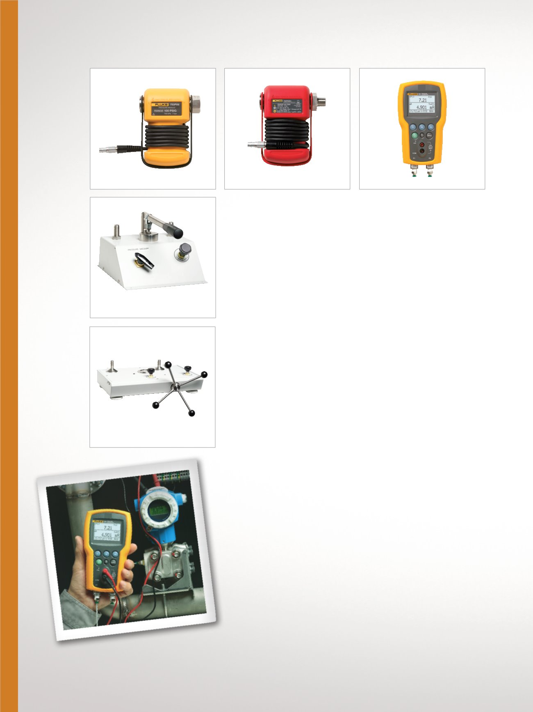

12
Étalonnage de pression
721
Étalonneur de pression double
plage 721
Grâce aux deux plages de mesure
et à la mesure de *température,
le dispositif 721 est idéal pour
les applications d'étalonnage de
transfert de pétrole d'un opérateur
à l'autre.
•
Quatorze modèles
•
Affichage de jusqu'à (3) mesures
simultanées
•
Facile d'utilisation grâce à
l'interface utilisateur simplifiée
•
Design robuste et durable doté
d'un étui de protection
•
Grande précision : 0,025 %
d'incertitude totale de mesure
sur un an
•
Des mesures de température
précises à 0,1 °C (0,2 °F) grâce à
l'entrée Pt100 RTD
•
Requiert la sonde 720RTD vendue
séparément comme accessoire
•
Étalonnage identifiable NIST
700P
700PEX
Modules de pression 700P
Une gamme complète de modules
de pression différentiels, relatifs,
absolus, de vide, doubles et
intrinsèquement sûrs est disponible,
de -15 psi (-103 kPa)
à 10 000 psi (69 MPa).
•
Meilleure incertitude de référence
de sa classe (0,025 °C)
•
Boîtier robuste, résistant aux
produits chimiques
•
Compensation de température
au moyen d'une sortie linéarisée
microtechnique propriétaire
•
Communication numérique avec
les étalonneurs ; évite les
pertes et erreurs de la
transmission analogique
•
Étalonnage identifiable NIST
Modules de pression
IS 700PEx
Modules de pression intrinsèque-
ment sûrs pour créer une solution
de test de pression complète.
•
Certifié par CSA : I.S. classe I,
div. 1, groupe A-D T4,
Ta = 0 °C à 50 °C
•
Conforme ATEX II 1G EEx ia IIC T4
•
Étalonnage identifiable NIST